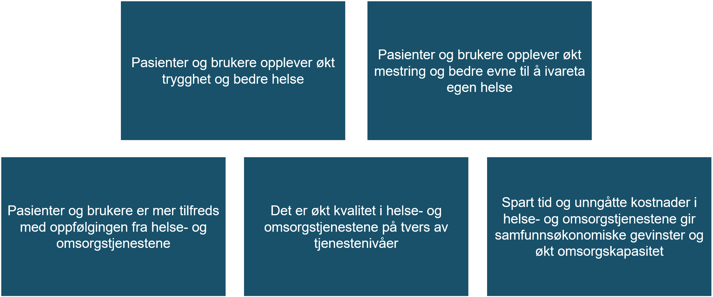

Målbilde for DHO og velferdsteknologiprogrammet
| Status | Version | Maturity | Normative level |
|---|---|---|---|
| Work in progress | v0.8 | review | ikke normert |
Dette kapitlet beskriver de overordnede strategiske målene for arbeidet med digital hjemmeoppfølging i Nasjonalt velferdsteknologiprogram (NVP) knyttet til tilrettelegging for styrket digital samhandling. Målbildet på strategisk nivå for DHO er beskrevet i Mål og tiltak i nasjonalt velferdsteknologiprogram.
 Figuren viser samfunnsmålene for Nasjonalt velferdsteknologiprogram
Tiltaksområde: Arkitektur og infrastruktur
Det er definert syv ulike tiltaksområder i NVP. Utviklingen av målarkitektur for samhandling innen DHO er en hovedleveranse fra Tiltak 5 Arkitektur og infrastruktur. Formålet med dette tiltaket er å sørge for at normerende produkter og nasjonale samhandlingsløsninger videreutvikles slik at de ivaretar behov relatert til velferdsteknologi og digital hjemmeoppfølging.
Det er også identifisert to hovedbarrierer for utbredelsen av velferdsteknologi og effektiv utnyttelse av DHO i helse og omsorgssektoren.
- Det er mangelfull tilrettelegging for digital informasjonsdeling mellom velferdsteknologi/digital hjemmeoppfølgingssystemer og journalsystemer/fagsystemer som helse- og omsorgstjenesten benytter i behandling- og oppfølging av pasienter
- Det er mangelfull tilrettelegging for et bærekraftig leverandørmarked som bidrar til at innovasjonskraften i helse- og omsorgssektoren og i leverandørmarkedet spiller på lag
NVP har i tillegg til de overordnede samfunnsmålene definert mål for å svare på oppdraget i tildelingsbrevet fra Helse- og omsorgsdepartementet (HOD). Tiltak 5 skal i hovedsak adressere effektmålet som handler om Økt, bedre og sikker digital samhandling på tvers av tjenestenivåer og sektorer.